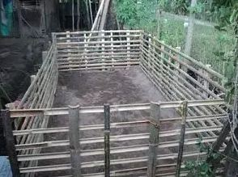

|
||||||||
| Home | Jenis Ikan | Cara Budidaya | Penyakit lele | Pembuatan Kolam | Pengolahan Lele | Tentang Saya | Layer | Form |
Cara Pembuatan Kolam Lele Dumbo
Rahasia Sukses Ternak Ikan Lele dengan Kolam TerpalUsaha dapat berkembang pesat jika dimulai dengan kesungguhan. Kesungguhan yang dimaksud ialah konsistensi dan daya juang. Jangan sampai menyerah jika nantinya banyak mendapati kendala yang terjadi di lapangan. Tips sukses yang bisa dipakai sebagai berikut: Pernah terbesit dalam benak, Bagaimana cara membuat kolam terpal sendiri? Mungkin saja itu adalah pertanyaan yang sering muncul bagi peternak pemula. Nah, Berikut ini kami berikan tahapan pembuatan kolam terpal khusus untuk budidaya ikan lele. Penting! Bagi para peternak ikan lele, kolam terpal menjadi salah satu alternatif disaat budidaya ikan lahan yang digunakan terbatas. Selain itu juga cara membuat kolam terpal terbilang cukup mudah dan tidak membutuhkan biaya yang banyak. Terlebih lagi jenis kolam terpal mempunyai sifat semi-permanen atau dapat dibongkar pasang. Dalam pembuatan kolam terpal kamu harus membutuhkan rangka yang kuat. Fungsi dari Rangka ini adalah sebagai dinding penahan pada kolam. Bahan yang dapat digunakan sebagai rangka kolam terpal adalah seperti bambu, besi, baja ringan, ataupun batu bata. kamu juga dapat memadukan bahan pembuatan rangka kolam ini, agar tercipta estetika yang menarik dari kolam tersebut.  Membuat kolam terpal untuk ternak lele dengan kombinasi rangka dari bambu tentunya sangat cocok bagi kamu yang masih pemula atau dalam tahap belajar. Kali ini admin akan menjelaskan cara membuat kolam terpal untuk berternak lele dengan luas lahan 2 x 4 meter, dengan penggunaan terpal berukuran 4 x 6 meter. Bambu yang kamu butuhkan dalam pembuatan kolam terpal untuk ternak lele sejumlah 10 biji atau 10 selonjor. Dengan panjang rata – ratanya sekitar 7 meter. Lokasi pembuatan kolam terpal untuk ternak lele pun tak perlu proses penggalian. Alas kolam terpal untuk ternak lele dapat langsung di atas lahan atau tanah. Berikut Tahapan Cara Pembuatan Kolam Terpal Untuk Ternak Lele : Tahapan pertama proses atau cara membuat kolam terpal untuk ternak lele yaitu, potonglah bambu dengan panjang kurang lebih 2 meter serta 4 meter. Pemotongan bambu dilakukan dengan berdasarkan penyesuaian jarak kerapatan bilah pagar. Kekuatan konstruksi kolam kamu bergantung pada tingkat kerapatan bilah pagar tersebut, semakin rapat maka semakin kuat dan tahan lama kolam yang kamu buat. Sebelum proses perangkaian atau dipaku, sebaiknya kamu meraut halus bambu yang telah dipotong. Hal ini bertujuan untuk mencegah kebocoran terpal akibat tusukan bagian bambu yang masih tajam. Ketika stok bambu kamu kurang, sebaiknya kamu memprioritaskan kerapatan bambu bagian bawah. Nantinya ke atas baru dibuat sedikit renggang, dengan batas debit air kolam. Tekanan air bagian bawahlah yang yang dapat membuat terpal menjadi bocor. Langkah kedua cara membuat kolam terpal yaitu, sekarang kamu buatlah pagar yang ukurannya 1 x 4 serta 1 x 2, masing–masing 2 buah. Perlu diingat nih, Pagar yang bagiannya halus posisinya di bagian dalam kolam dan bagian bilah pagar yang rapat diposisikan pada bagian bawah. Nah, Setelah penempatan bilah bambu yang sudah menjadi pagar, selanjutnya kamu membuat patok dari bambu yang telah kamu bagi tadi menjadi 2 bagian. Patok yang ditanam saya sarankan ditanam sedikit dalam sampai patok tak goyang. Langkah ketiga cara membuat kolam terpal adalah penyatuan atau pengeretan pagar dan patok. Penguatan atau pengeratan dapat kamu gunakan paku dan ikatan dari tali. Untuk konstruksi maksimal dapat dilakukan keduanya yaitu dipaku terus diikat, ingat semakin banyak patok dan semakin dalam patok yang kamu tanam maka dinding kolam terpal untuk ternak lele kamu semakin kuat. Sebelum memasang terpal terlebih dahulu kamu memasang saluran pipa untuk saluran pembuangan kolam. Cara atau Proses pemasangan pipa saluran pembuangan air kolam terpal untuk berternak leleTujuan pemasangan pipa saluran pembuangan dalam kolam terpal yaitu untuk menguras atau mengganti air kolam, ataupun saat kamu melakukan pemanenan. Ukuran lubang saluran pembuangan dapat kamu sesuaikan dengan keinginan kamu, semakin besar lubang saluran maka semakin cepat pembuangan air didalam kolam. Selain sebagai saluran pembuangan, lubang tersebut dapat digunakan sebagai pengatur level ketinggian air di dalam kolam terpal.Bahan yang diperlukan:
Langkah Kerja
|
||||||||